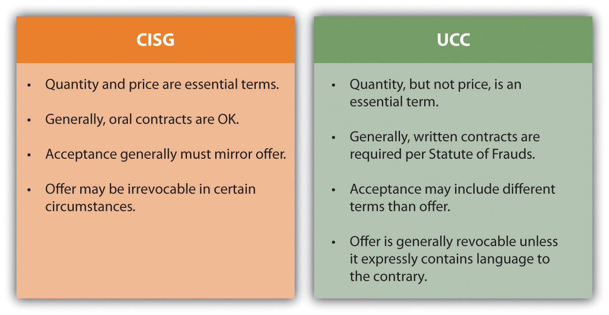

Several U.S. laws apply to U.S. companies conducting business internationally. For example, trade regulations are relevant to importers and exporters of products. Also, some activities are prohibited to U.S. businesses, such as doing business with a terrorist organization. It is important for all companies contemplating doing business in the international environment to understand the laws that apply to their activities so that they can avoid criminal and civil liability, and maintain a commitment to ethics.
The removal or reduction of trade barriers in accordance with the former General Agreement on Tariffs and Trade (GATT)An international treaty that worked to reduced trade barriers. and most recently the World Trade OrganizationCreated by the GATT, it addresses trade between nations, including dispute resolution. presents opportunities for businesses. Likewise, multinational agreements that remove trade barriers to create largely duty-free and tariff-free trading zones, such as the North American Free Trade AgreementA trade agreement between Canada, the United States, and Mexico., allow for freer flow of goods and services between specific countries. These agreements create tremendous opportunities for businesses because they lower the costs associated with importing and exporting, which is a primary consideration for many companies.
Companies wishing to export or import products are subject to federal trade regulations. Export controlsControls that prohibit or restrict the export of certain types of products. prohibit or restrict the export of certain types of products while limiting or restricting specific products from entering a country, perhaps by way of tariffs or quotas. The U.S. government views exporting as a privilege and not as a right and has the authority to impose a total ban on exporting on U.S. companies for export control violations. Try to imagine what an export ban would do to companies such as Microsoft, Boeing, or Apple.
The activities of companies that ship products overseas are subject to federal export controls. To exportTo transport products to another country. simply means to transport products to another country. Export controls are regulated by several departments of the federal government. For example, the Export Administration Regulations are administered by the U.S. Department of Commerce Bureau of Industry and Security, and they regulate items that may have a dual commercial or military use, such as computers and electronics. The U.S. Department of the Treasury Office of Foreign Assets Control regulates and enforces trade sanctions. The U.S. Department of State International Traffic in Arms Regulation prohibits certain types of trade, such as the unlicensed export of weaponry and certain chemicals.
Other federal agencies and programs exist in a supportive capacity, to assist U.S. businesses in their export endeavors rather than to regulate and enforce export controls. For example, the U.S. Department of Commerce’s International Trade Administration supports U.S. exports and competitiveness abroad. Check out Note 13.21 "Hyperlink: Exporting?" for several short videos designed to teach companies how to engage in this lucrative and large marketplace.
http://www.census.gov/foreign-trade/aes/exporttraining/videos
Check out these short training videos to learn about regulatory compliance.
Similarly, the National Export Initiative was created by the Obama administration, and it assists U.S. businesses to operate in the global market. Check out President Obama discussing the need to boost exports at a recent import/export conference.
Companies wishing to import products are also subject to import controlsControls that limit or restrict specific products from entering a country.. Import controls take many forms including tariffs, quotas, and bans or restrictions. The U.S. Department of Homeland Security Customs and Border Protection Agency (CBA) has a primary role in import control administration and regulation. For example, it inspects imports to classify them to establish their tariff schedule.
A tariffAn import tax. applies to certain goods imported from other countries. Tariffs are import taxes. They are imposed to render the imported product more expensive and to keep the cost of nonimported products (domestic products) attractive to consumers. CBA customs officers classify the imported goods, which determines the applicable tariff. However, the Customs Modernization and Informed Compliance Act places responsibility for compliance with import laws on the importer.
QuotasLimits on quantity. apply to certain goods. Quotas are simply limits on quantity. No absolute quotas exist, but certain tariff rate quotas apply to certain items, such as specific types of textiles and dairy products. A tariff rate quotaA favorable tariff on certain quantities of particular types of imports. simply provides favorable tariffs on certain quantities of particular types of imports.
BansProhibit importation of certain items by law. apply to goods that are prohibited by law to import, because they are dangerous to public safety, health, the environment, or national interests. Other items are restricted from import. For example, it is illegal to import items of cultural heritage from other countries without permission. Check out Note 13.28 "Hyperlink: What? These Old Rocks?" to see a recent story about 525-million-year-old fossils that were illegally imported into the United States and have been returned to China.
http://www.cbp.gov/xp/cgov/newsroom/highlights/chinese_fossils.xml
Along with the CBA, the U.S. International Trade Commission investigates import injuries to the United States, such as dumping and subsidized imports, and the need for safeguards. DumpingWhen a foreign producer exports products to sell at prices less than its cost of manufacturing. is when a foreign producer exports products to sell at prices less than its cost of manufacturing. Subsidized importsProducts produced in a foreign land in which a government has provided financial assistance for the production. are products produced overseas for which a government has provided financial assistance for the production. When dumping or subsidized imports materially injure or threaten to injure domestic producers, the United States may impose a countervailing dutyA type of tariff imposed for subsidized products. for subsidized products or an antidumping dutyA type of tariffs imposed on dumped goods. for dumped products. These duties, which are particular types of tariffs, reduce the negative impact that such practices could have on U.S. companies. SafeguardsLimited duration growth restrictions that are imposed when domestic markets are threatened or injured from imports. are limited duration growth restrictions that are imposed when domestic markets are threatened or injured from imports. This allows for domestic markets to adjust to the surge from the import market. For example, the United States imposed safeguards on Chinese textiles in response to actual or threatened market disruption of the U.S. textile industry.U.S. Government Accountability Office, “U.S.-China Trade: Textile Safeguards Should Be Improved,” GAO-05-296, April 2005, http://www.gao.gov/new.items/d05296.pdf (accessed September 27, 2010).
The U.N. Convention on Contracts for the International Sale of GoodsA treaty that applies to the sale of goods between parties from countries that are signatories to this treaty. (CISG) applies to the sale of goods between parties from countries that are signatories to this treaty. Like the Uniform Commercial Code (UCC)A model statute that seeks to provide uniformity to contracts law among the different states. It is not a law until state legislatures adopt it as law., it creates a uniform law for the parties that adopt it. Specifically, the CISG applies to contracts for international sale of commercial goods. Additionally, like the UCC, it provides gap-fillers for terms that may not be expressly stated in the contract. However, important differences between the UCC and the CISG exist, particularly with respect to revocability of an offer, acceptance, the requirement for a writing to be enforceable, and essential terms. See Figure 13.7 "A Comparison of Differences between the CISG and the UCC" for a comparison between the CISG and the UCC.U.S. Department of Commerce, Office of the Chief Counsel for International Commerce, “The U.N. Convention on Contracts for the International Sale of Goods,” August 2002, http://www.osec.doc.gov/ogc/occic/cisg.htm (accessed September 27, 2010). The contracting parties may opt out of the CISG, providing that they do it expressly.
Figure 13.7 A Comparison of Differences between the CISG and the UCC
The CISG does not limit the parties to a particular forum to resolve disputes, and it does not limit the terms of the contract itself. It is important for parties to choose which forum will apply to disputes arising under the contract. Choice of forumClauses and contract provisions that specify where complaints will be heard. clauses specify where complaints will be heard. If parties opt out of the CISG, then they must choose which law will apply to their contract by a choice of law clause. The parties will also need to agree on the official language of the contract. Given the precise language necessary for contractual agreements to be interpreted, this choice clearly matters to the interests of the contracting parties.
U.S. citizens that are working for U.S. companies overseas are protected by U.S. federal employment laws, such as Title VII of the Civil Rights ActAn important federal statute that prohibits illegal discrimination. and the Americans with Disabilities ActA federal statute that prohibits illegal discrimination.. This means that U.S. companies may not illegally discriminate against U.S. employees with a protected characteristic simply because those employees happen to report to work for the company on foreign soil.
Additionally, the Alien Torts Claims ActA federal statute that allows noncitizens to bring suit in U.S. federal court against U.S. businesses or citizens that have committed torts or human rights violations in foreign lands. allows noncitizens to bring suit in U.S. federal court against U.S. businesses or citizens that have committed torts or human rights violations in foreign lands.
Those engaged in international business must be aware of prohibited activities, because severe criminal penalties are possible. For example, paying bribes to get things done is not permitted. The Foreign Corrupt Practices Act (FCPA)A federal statute that prohibits the payment of bribes by U.S. companies and the employees of those companies. prohibits the payment of bribes by U.S. companies and the employees of those companies. Violation of this law is a criminal offense. It does, however, permit grease paymentsFacilitating payments that are not bribes., or facilitating payments, if such payments are permitted by the local government where the payments occurred. Since it is extremely rare to find a jurisdiction that legally permits grease payments (even in countries where corruption is rampant, it’s probably still illegal), the grease payments exception provides false comfort to those who undertake to use it.
U.S. citizens and companies must refrain from doing business with prohibited people or entities. The U.S. Department of the Treasury Office of Foreign Assets Control (OFAC) maintains a list of Specially Designated Nationals and Blocked Persons, which is a list of persons, businesses, and entities with which U.S. citizens are forbidden from conducting business. Similarly, U.S. citizens are not permitted to engage in trade or business dealings with those in countries in which a U.S. embargo or U.S. imposed economic sanctions exists. Check out Note 13.42 "Hyperlink: Prohibited Parties" for these lists.
Specially Designated Nationals and Blocked Persons List
http://www.treas.gov/offices/enforcement/ofac/sdn
Economic Sanctions
http://www.treas.gov/offices/enforcement/ofac/programs/index.shtml
U.S. citizens are also blocked from conducting transactions with terrorists or terrorist organizations.U.S. Department of the Treasury, Office of Foreign Assets Control, “Terrorism: What You Need to Know about U.S. Sanctions,” Executive Order 13224 §2(a), September 23, 2001, http://www.treasury.gov/offices/enforcement/ofac/programs/terror/terror.pdf (accessed September 27, 2010). Conducting transactions with prohibited persons, entities, or businesses can result in serious criminal violations, which carry financial penalties and long prison sentences.
Finally, while the United States maintains economic boycotts against several countries, under U.S. antiboycott lawsLaws that prevent U.S. persons and companies from complying with any unsanctioned foreign boycott. it is illegal for U.S. persons and companies to comply with any unsanctioned foreign boycott. The most important unsanctioned foreign boycott is the long-standing Arab League boycott of Israel. If a U.S. person or company receives a request to comply with the boycott of Israel (such as a request from a buyer in Saudi Arabia not to ship goods via Israel, or not to ship on an Israeli flag ship, or even to state whether the seller has any operations in Israel or to state the religious affiliations of each employee in the company), then the U.S. person or company must refuse to comply with the request and report it to the appropriate U.S. government agency within a specified period of time.
International business opportunities are lucrative, and the global marketplace provides vast opportunities for growth. However, U.S. companies that engage in international business are subject to trade regulations, must be cognizant of the challenges inherent when forming international contracts, and are prohibited from engaging in certain activities.